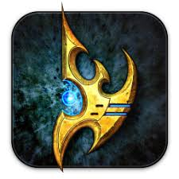

Gameplay
You can play as any of these 3 races:
Terran:
The Terran units you can use and where you create them are:
Command Center:
SCV
Barracks:
Marine
Marauder
Reaper
Ghost
Factory:
Hellion/Hellbat
Siege Tank
Cyclone
Widow Mine
Thor
Starport:
Viking
Medivac
Liberator
Raven
Banshee
Battlecruiser
Zerg:
The Zerg units you can use and where you create them are:
Hattery:
Drone
Overlord
Zergling/Baneling
Queen
Roach/Ravager
Lair:
Overseer/(Overlord)
Mutalisk
Corruptor
Hydralisk/Lurker
Infestor
Swarm Host
Hive:
Ultralisk
Brood Lord/(Corrupter)
Viper
Special:
Locust/(Swarm Host)
Broodling/(Brood Lord)
Changeling/(Overseer)
Infested Terran/(Infestor)
Nydus Worm/(Nydus Network)
Protoss:
The Protoss units you can use and where you create them are:
Nexus:
Probe
Mothership Core
Mothership
Gateway:
Zeealot
Stalker
Sentry
Adept
High Templar
Dark Templar
Robotics Facility:
Observer
Warp Prism
Immortal
Colossus
Disruptor
Stargate:
Phoenix
Void Ray
Oracle
Carrier
Tempest
Special:
Archon/(Fussion of 2 dark templar or 2 high templar or one of each)